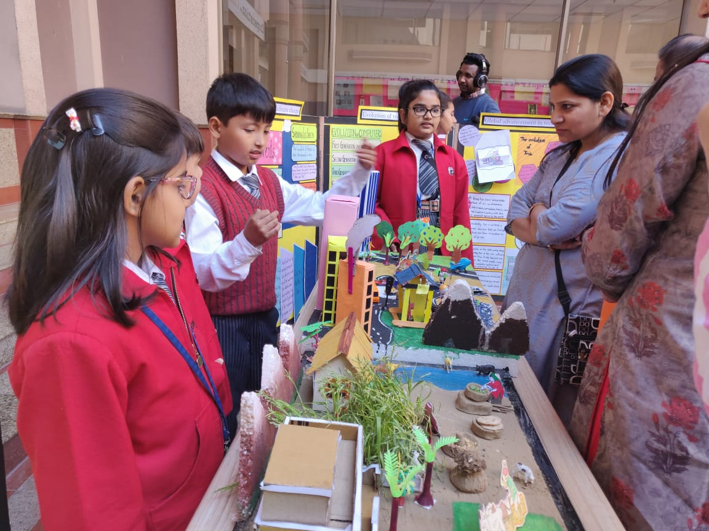
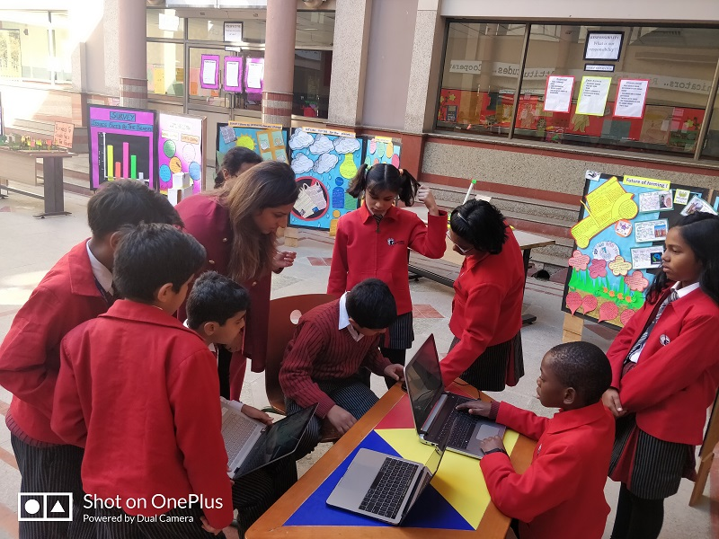

Shashwat's PYP Exhibition
GD Goenka World School
PYP exhibition is all about ‘Student Learning’. It’s a culminating event of a primary students’ education. It represents the culmination of who the students are as learners and demonstrate what they achieved in all areas of the Primary Years Programme. An IB PYPian learns to be an internationally-minded student who progresses through a collaborative, critical thinking journey of inquiry throughout the primary years. They explore local and global issues as well as learn to make connections and dig deeper. In the final year of PYP, this exhibition involves students working together to conduct an in-depth inquiry where they identify, investigate and find solutions to real-life issues and problems.

